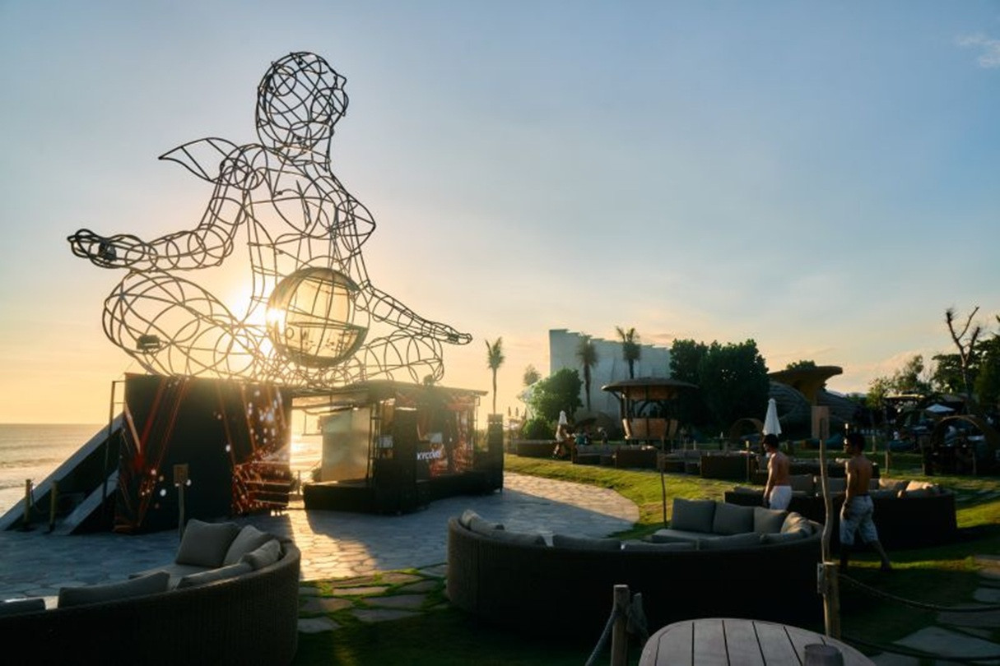

Nuanu Creative City adalah sebuah kawasan kreatif dan inovatif yang berada di Tabanan, Bali. Nuanu dirancang sebagai tempat yang menggabungkan seni, budaya, teknologi, pendidikan, lingkungan, dan kehidupan masyarakat dalam satu kawasan. Konsepnya bukan hanya sebagai tempat wisata, tetapi sebagai “creative city” yang mendorong orang untuk berkarya, belajar, berkolaborasi, dan menciptakan berbagai inovasi.
Di dalam Nuanu terdapat berbagai fasilitas dan kegiatan yang berkaitan dengan seni, kreativitas, pendidikan, dan lingkungan. Kawasan ini memiliki ruang seni, tempat pertunjukan, area untuk berbagai kegiatan kreatif, serta lingkungan hijau yang dirancang agar manusia dapat lebih dekat dengan alam. Nuanu juga sering menjadi tempat berlangsungnya acara seni, musik, budaya, dan kegiatan komunitas. Salah satu hal yang menjadi cirinya adalah perpaduan antara arsitektur modern dengan alam dan budaya Bali.
Tujuan utama Nuanu adalah menciptakan sebuah lingkungan yang dapat menjadi tempat berkembangnya ide dan komunitas sekaligus memberikan dampak positif bagi lingkungan dan masyarakat. Karena itu, Nuanu dapat dilihat sebagai contoh perkembangan kota kreatif di Indonesia, yaitu kawasan yang tidak hanya berfokus pada ekonomi dan pariwisata, tetapi juga pada kreativitas, keberlanjutan, budaya, dan inovasi. Dengan konsep tersebut, Nuanu berusaha menjadi ruang yang mempertemukan manusia, alam, teknologi, seni, dan budaya dalam satu kawasan.